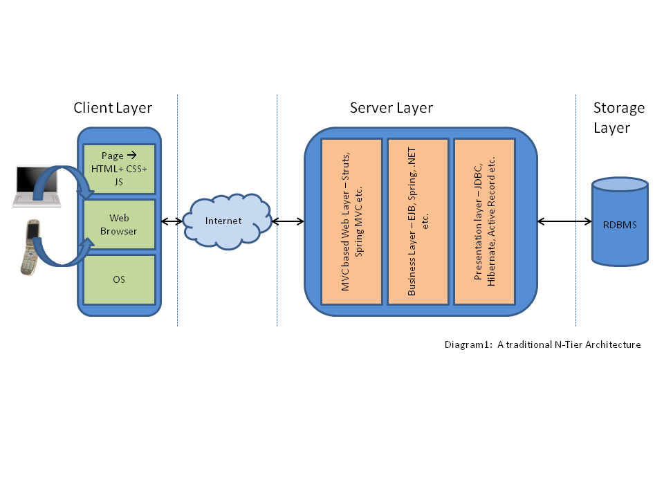
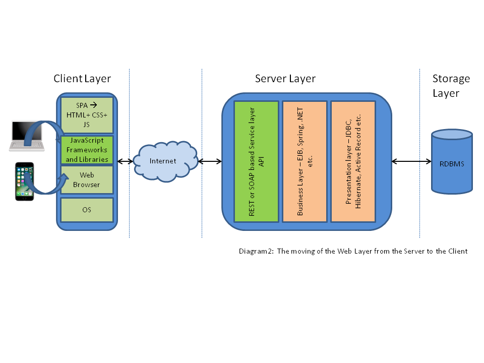
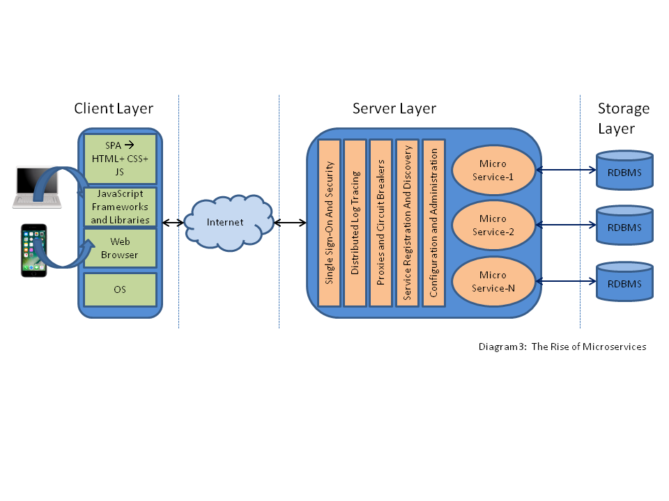
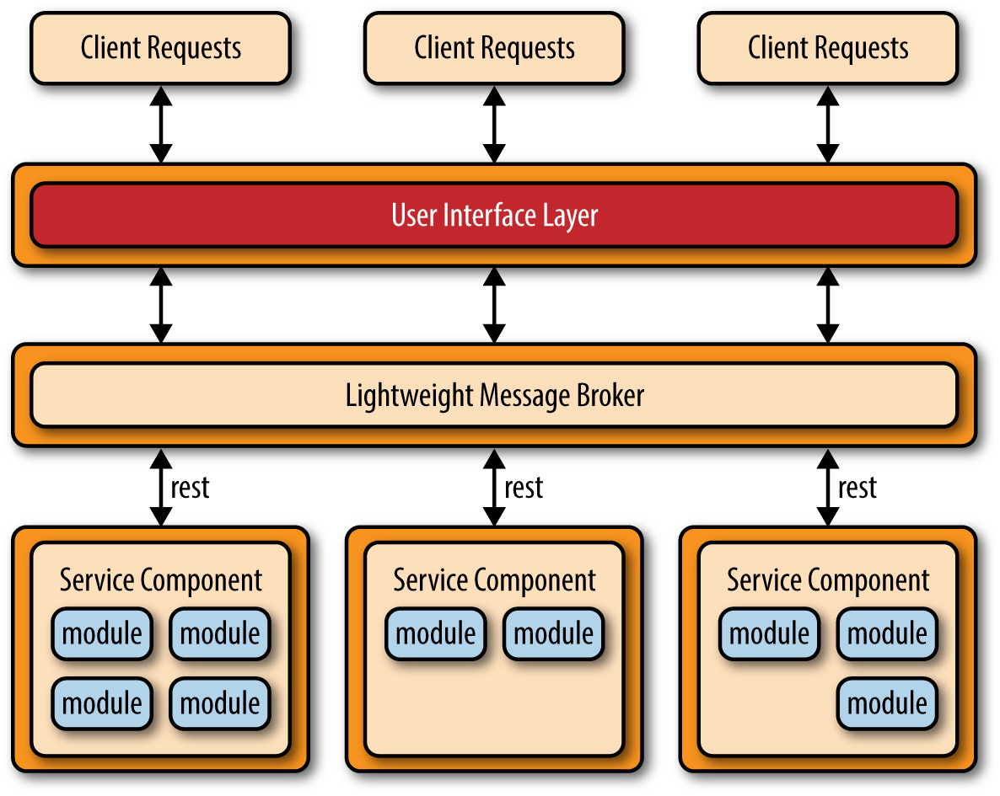
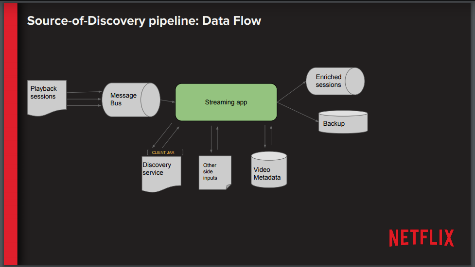

We bekijken de (lange) video waarin de componenten van een BD-systemen worden beschreven in de context van Netflix.
De video benoemt een aantal keer dat Netflix veel gebruik maakt van Microservices architecturen (zie ook dit artikel en deze blog).

(bron)

(bron)

(bron)


Zie de opdracht op Canvas.